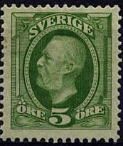
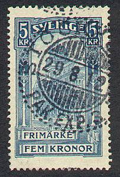
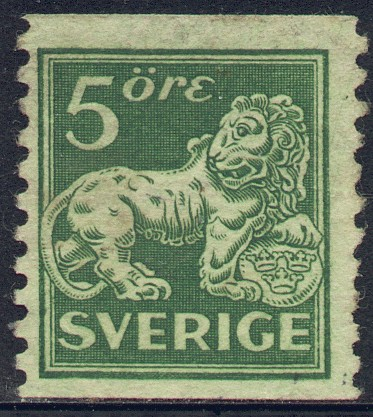
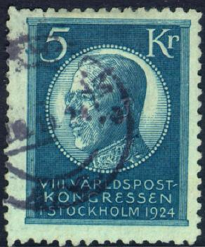

Return To Catalogue - Sweden 1855-1884 - Sweden miscellaneous - Local issues overview (bypost)
Note: on my website many of the
pictures can not be seen! They are of course present in the
catalogue;
contact me if you want to purchase it.
For stamps of Sweden issued from 1855 to 1884, click here.



5 o green 8 o purple 10 o red 10 o red (different type) 15 o brown 20 o blue 25 o orange 30 o brown 50 o grey 1 Kr red and grey
The 10 o exists with a posthorn (in blue) on the back. It was issued in 1886. All the above stamps are perforated 13.
Value of the stamps |
|||
vc = very common c = common * = not so common ** = uncommon |
*** = very uncommon R = rare RR = very rare RRR = extremely rare |
||
| Value | Unused | Used | Remarks |
| No watermark, no posthorn on the back (1885) | |||
| 10 o | ** | c | '10' simple |
| 20 o | * | c | 1911 |
| 25 o | * | * | 1911 |
| No watermark, posthorn on the back (1886) | |||
| 10 o | * | c | '10' simple |
| Watermark 'Posthorn' (1891) | |||
| 5 o | * | vc | |
| 8 o | c | vc | 1903 |
| 10 o | c | vc | '10' fancy, the '1' as in the 15 o value |
| 15 o | c | vc | 1896 |
| 20 o | c | vc | |
| 25 o | * | vc | 1896 |
| 30 o | * | vc | |
| 50 o | ** | vc | |
| 1 K | ** | c | 1900 |
Proof impressions of the head only


1 o brown and blue 2 o blue and yellow 3 o brown and yellow 4 o red and blue
These stamps are perforated 13 and have watermark 'Crown'.
Value of the stamps |
|||
vc = very common c = common * = not so common ** = uncommon |
*** = very uncommon R = rare RR = very rare RRR = extremely rare |
||
| Value | Unused | Used | Remarks |
| 1 o | c | vc | |
| 2 o | c | vc | |
| 3 o | c | c | |
| 4 o | c | vc | |


5 Kr blue Overprinted 'FRIMARKE LANDSTORMEN FRIMARKE' (War issue, 1916)

10 o + 4.90 K on 5 K blue
These stamps have watermark 'Crown' and perforation 13.
Value of the stamps |
|||
vc = very common c = common * = not so common ** = uncommon |
*** = very uncommon R = rare RR = very rare RRR = extremely rare |
||
| Value | Unused | Used | Remarks |
| 5 K | *** | *** | |
| 5 K 'Landstormen' | *** | *** | 1916 |
1 o black 2 o orange 3 o brown 4 o violet
Value of the stamps |
|||
vc = very common c = common * = not so common ** = uncommon |
*** = very uncommon R = rare RR = very rare RRR = extremely rare |
||
| Value | Unused | Used | Remarks |
| With watermark 'Crown | |||
| 1 o | c | c | |
| 2 o | c | c | |
| 4 o | c | c | |
| With watermark 'Wavy lines' | |||
| 1 o | vc | vc | |
| 2 o | c | vc | |
| 3 o | c | vc | 1916 |
| 4 o | c | vc | |
A reprint of the 2 o stamp with 'Frima 65' printed alternately,
made in 1965?


5 o green 7 o green 8 o lilac 10 o red 12 o red 15 o brown 20 o blue 25 o orange 27 o blue 30 o brown 35 o violet 40 o olive 50 o grey 55 o blue 65 o green 80 o black 90 o green 1 K black on yellow 5 K red on yellow
Value of the stamps |
|||
vc = very common c = common * = not so common ** = uncommon |
*** = very uncommon R = rare RR = very rare RRR = extremely rare |
||
| Value | Unused | Used | Remarks |
| With watermark 'Crown | |||
| 5 o | * | * | |
| 10 o | c | vc | |
| 1 K | * | vc | 1911 |
| 5 K | *** | c | 1914 |
| With no watermark | |||
| 5 o | c | vc | |
| 7 o | c | vc | 1918 |
| 8 o | c | c | 1912 |
| 10 o | c | vc | |
| 12 o | c | vc | 1918 |
| 15 o | c | vc | |
| 20 o | c | vc | |
| 25 o | * | vc | |
| 27 o | * | * | 1918 |
| 30 o | * | vc | |
| 35 o | * | vc | |
| 40 o | * | vc | 1917 |
| 50 o | * | vc | 1912 |
| 55 o | RR | RR | 1917, only 1000 stamps issued |
| 65 o | * | c | 1917 |
| 80 o | RR | RR | 1917 |
| 90 o | * | c | 1917 |
| 1 K | *** | c | 1919 |
Surcharged

'KR.1.98' on 5 K red on yellow (1916) 'KR.2.12' on 5 K red on yellow (1916) '7' on 10 o red (1918) '12' on 25 o orange (1918) '12' on 65 o green (1918) '27' on 55 o blue (1918) '27' on 65 o green (1918) '27' (blue) on 80 o black (1918)
Value of the stamps |
|||
vc = very common c = common * = not so common ** = uncommon |
*** = very uncommon R = rare RR = very rare RRR = extremely rare |
||
| Value | Unused | Used | Remarks |
| Kr.1.98 on 5 K | *** | ** | Watermark 'Crown' Valid for parcels to Russia |
| Kr.2.12 on 5 K | *** | ** | Watermark 'Crown' Valid for parcels to Russia |
| 7 on 10 o | c | c | |
| 12 on 25 o | c | c | |
| 12 on 65 o | c | c | |
| 27 on 55 o | * | * | |
| 27 on 65 o | * | * | |
| 27 on 80 o | * | * | |
Forgeries of the non-surcharged 55 o and 80 o exist; I have seen forgeries made by Peter Winter (made in the 1980's). I have no further information. Some modern forgeries, created with a scanner and printer (probably) were made by a forger from Hialeah (Florida), they are often referred to as Hialeah forgeries. Most of the details are very poor and the sizes are incorrect. I have seen the 80 o Hialeah forgery.
(Some forgeries as they are often offered at Ebay, produced from
a photo?)
Sorry, no picture available yet
3 o orange
Value of the stamps |
|||
vc = very common c = common * = not so common ** = uncommon |
*** = very uncommon R = rare RR = very rare RRR = extremely rare |
||
| Value | Unused | Used | Remarks |
| 3 o | c | c | |

(Many of these stamps are only perforated at two sides)
5 o green 5 o orange 10 o green 25 o orange 30 o brown
Value of the stamps |
|||
vc = very common c = common * = not so common ** = uncommon |
*** = very uncommon R = rare RR = very rare RRR = extremely rare |
||
| Value | Unused | Used | Remarks |
| 5 o green | c | c | |
| 5 o orange | * | vc | |
| 10 o | * | vc | |
| 25 o | * | c | |
| 30 o | * | vc | |

10 o red 15 o red 20 o blue
Value of the stamps |
|||
vc = very common c = common * = not so common ** = uncommon |
*** = very uncommon R = rare RR = very rare RRR = extremely rare |
||
| Value | Unused | Used | Remarks |
| 10 o | * | vc | |
| 15 o | * | c | |
| 20 o | ** | vc | |

(Many of these stamps are only perforated at two sides)
15 o violet 15 o brown 15 o red 20 o violet 20 o red 25 o red 25 o orange 25 o blue (1925, dark or light blue) 30 o blue 30 o brown (1925) 35 o violet 40 o blue 40 o green (1929?) 45 o brown 50 o grey 85 o green 115 o brown (1925) 145 o green (1925)
Value of the stamps |
|||
vc = very common c = common * = not so common ** = uncommon |
*** = very uncommon R = rare RR = very rare RRR = extremely rare |
||
| Value | Unused | Used | Remarks |
| 15 o | * | c | |
| 20 o violet | * | vc | |
| 20 o red | * | c | |
| 25 o orange | * | * | |
| 30 o | * | vc | |
| 40 o | * | vc | |
| 50 o | ** | vc | |
(Many of these stamps are only perforated at two sides)
35 o yellow 40 o green 45 o brown 60 o lilac 70 o brown 80 o green 85 o green (1930) 90 o blue 1 K orange 110 o blue 115 o brown (1930) 120 o grey 120 o lilac 140 o grey 145 o green (1930)
Value of the stamps |
|||
vc = very common c = common * = not so common ** = uncommon |
*** = very uncommon R = rare RR = very rare RRR = extremely rare |
||
| Value | Unused | Used | Remarks |
| 35 o | * | vc | |
| 40 o | * | vc | |
| 45 o | ** | c | |
| 60 o | ** | vc | |
| 70 o | ** | ** | |
| 80 o | ** | vc | |
| 1 K | *** | c | |
| 110 o | *** | vc | |
| 140 o | *** | vc | |

Most of these stamps are only perforated vertically
20 o blue
Value of the stamps |
|||
vc = very common c = common * = not so common ** = uncommon |
*** = very uncommon R = rare RR = very rare RRR = extremely rare |
||
| Value | Unused | Used | Remarks |
| 20 o | * | vc | |
20 o violet 110 o blue 140 o black


View of Stockholm 5 o orange 10 o green 15 o violet 20 o red 25 o orange 30 o blue 35 o black 40 o olive 45 o brown 50 o grey 60 o lilac 80 o green Image of King 1 K green 2 K red 5 K blue

Postal rider on horse looking at an aeroplane 5 o brown 10 o green 15 o violet 20 o red 25 o orange 30 o blue 35 o black 40 o green 45 o brown 50 o grey 60 o lilac 80 o green Dove and globe 1 K green 2 K red 5 K blue
5 o green 10 o violet 15 o red 20 o orange 25 o blue
10 o blue 50 o violet
5 K green
{kind=link}